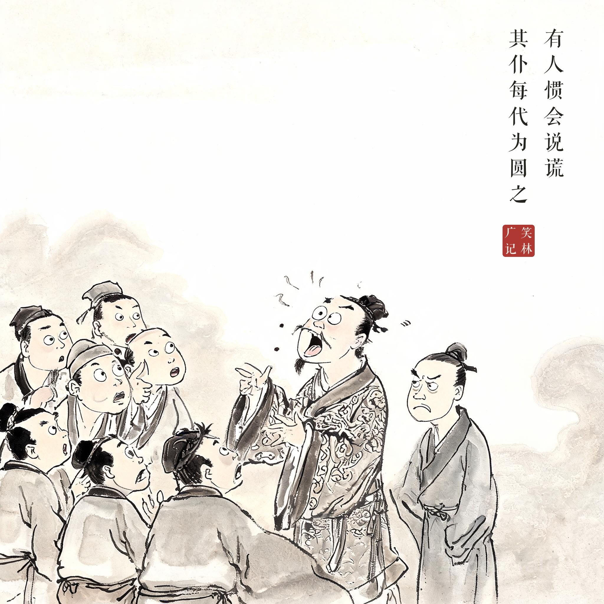
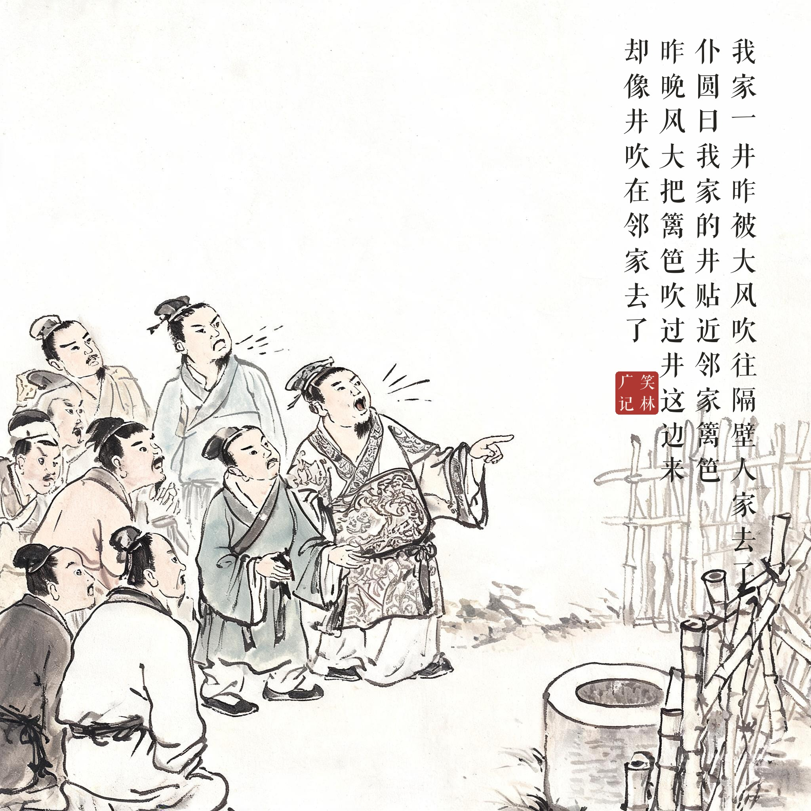
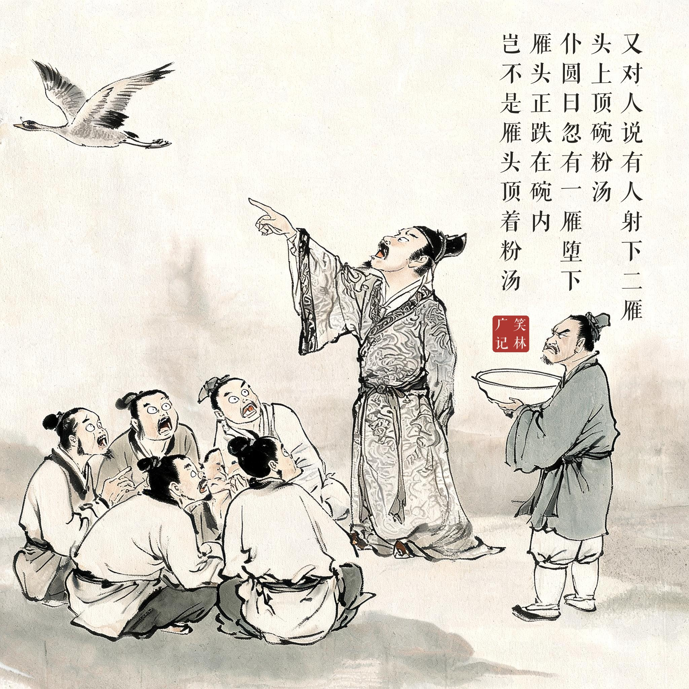
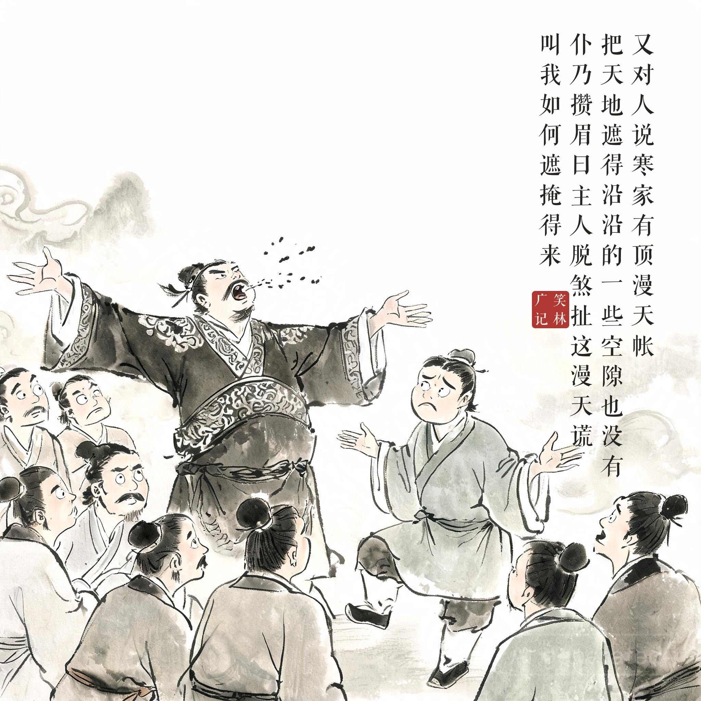

《笑林广记 · 谬误部》（[清]游戏主人纂集）
有人惯会说谎，其仆每代为圆之，一日，对人说："我家一井，昨被大风吹往隔壁人家去了。"众以为从古所无，仆圆之曰："确有其事。我家的井，贴近邻家篱笆，昨晚风大，把篱笆吹过井这边来，却像井吹在邻家去了。"一日，又对人说："有人射下二雁，头上顶碗粉汤。"众又惊诧之，仆圆曰："此事亦有。我主人在天井内吃粉汤，忽有一雁堕下，雁头正跌在碗内，岂不是雁头顶着粉汤。"一日，又对人说："寒家有顶漫天帐，把天地遮得沿沿的，一些空隙也没有。"仆乃攒眉曰："主人脱煞扯这漫天谎，叫我如何遮掩得来。"
有个人惯会说谎，仆人每次都替他把谎圆上。一天他对人说："我家的一口井，昨天被大风吹到隔壁家去了。"众人觉得闻所未闻，仆人圆谎道："确有其事。我家的井紧贴着邻居的篱笆，昨晚风大，把篱笆吹到井这边来了，看上去就像井吹到邻家去了。"又一天他对人说："有人射下两只雁，雁头顶着碗粉汤。"众人又惊诧，仆人圆道："这事也有。主人在天井里吃粉汤，忽然一只雁掉了下来，雁头正好跌进碗里——这不就是雁头顶着粉汤？"再一天他又说："寒家有顶漫天大帐，把天地遮得严严实实，一点空隙也没有。"仆人终于皱起眉头："主人这漫天大谎扯得太狠了，叫我如何遮掩得来！"
三段式递进圆谎：篱笆过井、雁头入碗，仆人勉强圆到第三回合，"漫天帐"终于圆不动了——"叫我如何遮掩得来"，谎话升级到遮不住的临界点，古今打工人的共同叹息。